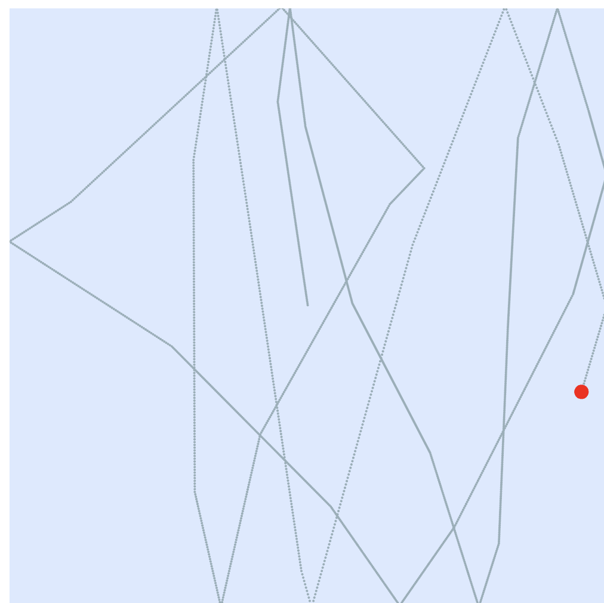

I learned ice skating a long time when I was younger, and I always enjoyed skating. When I skate, I feel like the time passes so fast that I didn't even notice. I only know that it's time for my skating rehearsal when the resurfacer comes. So I created a ice skating clock that shows the minutes and seconds by the skater skating on the ice and leaves traces as minutes. When an hour passes, the resurfacer comes to clean the ice. And the ice color changes subtly over an hour and refreshes on an hourly basis.
